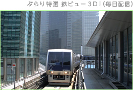
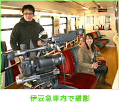
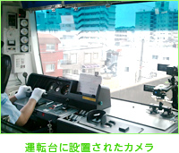
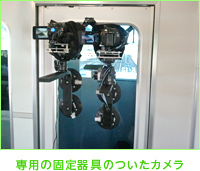
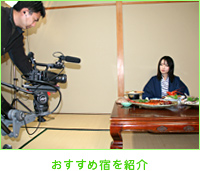
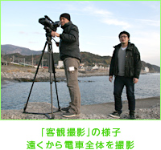
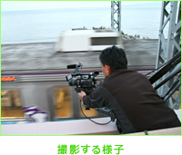

N.O.M2月号 『いつの間にテレビ』で多彩な3Dコンテンツを楽しもう

1. 「いつの間に通信」で楽しめる ニンテンドー3DSダウンロードソフト
列車の運転席からの風景をお送りする『ぶらり特選 鉄ビュー3D！』は、ニンテンドー3DSの裸眼立体視をフルに活かした、より臨場感のある旅気分を満喫できる映像コンテンツです。
その知られざる制作の裏側を、梶田プロデューサーと大家ディレクターのお二人にうかがいました。

制作スタッフインタビュー
――
日本テレビさんと言えば、『ぶらり途中下車の旅』が長寿番組として有名ですね。
映像素材は豊富にありそうですが、『ぶらり特選 鉄ビュー3D！』でもそれらの映像が使われているんでしょうか。
梶田
『ぶらり特選 鉄ビュー3D！』に関しては完全新作で、全部ニンテンドー3DS用に撮影しています。
――
そうすると、毎日配信されていますし、撮影もすごく大変そうですね。
梶田
実は撮影以前に、まずどの路線にするか当たりをつけて、鉄道会社さんに連絡してOKを取るまでが、仕事の全体の3割くらいを占めていたりします。
単にテレビ撮影という話なら鉄道会社さんにもすぐわかってもらえるんですが、「3Dだけどカメラはそんなに大きくないです」とか「テレビなんですけど、ゲーム機なんです」というところから、ご説明しないといけないので（笑）。
大家
3Dのカメラは、以前と比べるとかなり小さくなっています。許可をいただく際に機材の写真などを送ってほしいと言われることもあるんですが、「あ、こんなに小さいんですか」と逆に拍子抜けと言うか、驚かれたりしますね（笑）。
――
基本的に撮影は、車内にカメラを設置するという形で？
梶田
そうですね。一番最初は「ゆりかもめ」で、運転席がないこともあって、風景だけを撮っていたんですが、運転席の後ろ側から撮ったほうが、より3Dの奥行き感が出るなと考え方が変わってきました。運転席の後ろや客室から、できれば運転士さんも入れて撮影することが多くなっていますね。
――
3Dというのは、従来のテレビにはない部分ですよね。
梶田
伊豆急行線で初めてやったんですが、客席の一番後ろから、客席全部を写すようなことも試しています。従来どおりの風景ももちろんですが、「3Dのリアル感を活かすにはどんなアングルがいいのか」という方向にシフトしてきていますね。
ホームから撮影した、いわゆる「客観（視点）」の画を入れて、外から電車の音を拾ったりしてアクセントをつけたり、ディレクターの大家のほうで立体的な字幕スーパーをつけたりなど、いろいろ工夫しています。

――
3Dのカメラは、どんなものを使われているんですか？
梶田
通常の撮影と違って、被写体にあまり近く寄り過ぎると3D映像のよさが出ないので、どんな画を撮りたいのか、どこから撮影するのかなどについて、事前に念入りに打ち合わせをして、どのカメラを使うか決めています。
業務用のものだけでなく、小さくて手軽な民生用のものも、用途によって使い分けています。

――
車内は揺れると思うんですが、どうやって固定しているんですか？
梶田
吸盤のような専用の固定器具を自作していまして、それで電車の窓に貼り付けるんです。揺れを吸収するショックアブソーバーもついています。（三脚などと違って）これだと運転士さんや車内のお客さんの邪魔にもならないんです。途中で調節する場合もありますけど、基本的には、最初に位置やピントの調節をしたら、あとはそのまま撮り続けることになるので、そこは一番気を使いますね。

――
通常のテレビより小さな画面というのは難しいものですか？
梶田
細かい所が見えないという意味では、むしろ助かっています。ただし、ニンテンドー3DSの画面で見ることを前提にして撮影をシステム化してきているので、これを大画面のテレビでやるとなると、全部やり直しになると思います。通常のテレビや展示会などで3D撮影の経験はありましたが、裸眼の3Dでどのくらい見えるものなのかわからなかったので、最初は手探りでした。
大家
最初は大型スクリーンと同じように視差を考えて構図をつけていたんですけど、ニンテンドー3DSでは「通常より視差を強くつけすぎたかな」くらいがちょうどいい感じになりますね。
梶田
『ぶらり特選 鉄ビュー3D！』は、見る人の視点が運転席から固定で動かず、景色が動くという形なので、視差を強くしてもあまり違和感なく、ちょうどよく見えるのかなと。
――
プレイヤーの視点がカートに固定される『マリオカート７』のようなレースゲームでも、似たようなお話がありますね（「社長が訊く『マリオカート７』」）。
ところで、撮影には、何台くらいのカメラを使うものなのでしょうか？
梶田
そのときによって変わりますが、伊豆急行線のときの車内は、運転席の一番前と、画面に運転士が入る場所と、客席の一番後ろの、合計3台、3ポジションで撮影しました。また、タレントさんが沿線を旅するというコーナーもやりましたので、そこでは別のカメラを使っています。
――
タレントさんが出てくるというのは、新しい企画ですね。
梶田
鉄道アイドルの伊藤桃さんが、穴場スポットや海の幸が美味しい宿などを紹介するものです。乞うご期待ということで（笑）。ロケハン（※）でいろいろな場所をまわりましたので、そこで見つけた、これまであまりカメラが入っていないような場所を紹介したいなと。
※
ロケーション・ハンティングの略。撮影するためによい場所を探すこと。

――
ちなみにロケハンって、お仕事の全体で何割くらいになるんですか？
梶田
6割くらいですね（一同・笑）。交渉とロケハンが終われば、感覚的には、ほぼ終わったみたいな。あとは撮影当日の天気の心配をするくらいです。毎回予備日も指定しているんですけど、これまですべて晴れで、一発OKなのが自慢です（笑）。
――
すごい晴れ男なんですね（笑）。
梶田
乗客が多い土日を避けて、平日の日中になることが多いんですが、路線の方向と順光の方向なども考えて、朝からにするか、昼からにするか、上りで行くか下りで行くかなどを決めます。冬場になると日照時間も少なくなるので、スピード勝負になります。一日に走っている本数が少ない路線だと、一度逃すとアウトみたいなこともあるので、気を使いますね。
車内でのロケとは別に、電車の外からの「客観」のロケもします。車内ロケと同じ日にやれる場合もあれば、別の日に分けてやる場合もあるんですが、このポイント探しが一番大変だと思います。
大家
客観ロケは車内チームとは別行動で撮影しているんですが、だいたい路線ごとに、鉄道ファンの中でも撮影をメインに楽しむ、いわゆる「撮り鉄」のみなさんの中で有名な「お立ち台」ポイントというのがあるんです。そういう場所もしっかり押さえつつ、3Dで見栄えがよい場所をいろいろ探します。
場所が決まると、時刻表を見て先回りして移動するんですが、セッティングが終わって小一時間待つようなことはザラにあります（笑）。

梶田
逆に、上り下りの列車や、狙っていた列車と別の路線の列車がたまたま交差したりすると、これは神が降りてきたな、みたいな（笑）。そういうときはうれしいですね。
――
どの路線を採り上げるのかというのは、どういう基準で決まるんでしょう？
梶田
乗りたいな、っていう（一同・笑）。
大家
やはり、東京から近いか遠いかとか、撮影許可を取るのが大変ということより、風景やその列車自体が面白いかどうかですね。
われわれが乗りたいと思う路線でなければ、視聴者のみなさんにも面白いと思ってはいただけないでしょうし。探究心とか、初期衝動みたいなものを大事にして、必ずどこかにハイライトがある路線を選ぶというのが基本ですね。

梶田
瀬戸大橋線の「マリンライナー」にカメラをつけたら面白いだろうなとか、湘南新宿ラインの海から街の中までの長い路線をずっと見てみたいとか、だんだんテーマ性を強く出してきています。
ただ、自分たちの中では、そんなに大変だとは思ってないです。ロケハンのときも、観光客の立場と目線で見るわけですから、むしろ楽しませてもらっています。本番のときは乗客のみなさんのご迷惑にならないようにとか、トラブルがないようにとか、神経を使う部分はありますけど。
撮影には予備日を設けたり、カメラも予備機を用意したり、とにかく保険をたくさんかけて、トラブルが一切ないよう徹底しています。そういう部分が、われわれのノウハウとして一番重要な部分だと思っています。
――
それでは最後に、今後の展開や目標、視聴者のみなさんにメッセージなどを。
大家
3Dである以上は、実際に運転席に乗っている感覚を大事にしたいなと思っています。それに加えて、見ていて楽しくなるような、新しい要素も入れていければと。
梶田
沿線のものをピックアップしたり、ちょっと旅の要素を入れたり、あくまで鉄道がメインですが、これからはそういう変化球もちょっと入れていこうかなと思っています。その地に行ってみないと見られないような、行ってみたくなるような映像を作っていきたいですね。